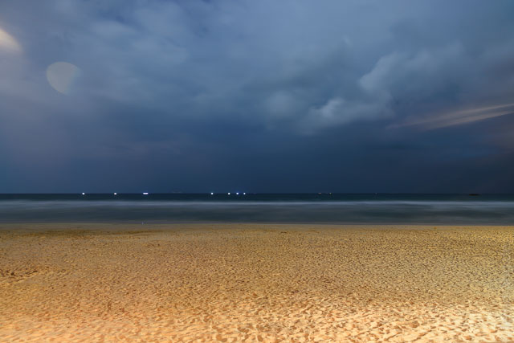

Im Hochland ist uns zu kalt geworden. Für die letzten Tage wollten wir uns noch etwas Wärme für den bevorstehenden Winter abholen. Es war allerdings gar nicht so einfach kurzfristig etwas an den Stränden zwischen Galle und Matara zu bekommen. Mit etwas Glück sind wir im "7th Sky Idyll" in Ahangama untergekommen. Die Fahrt ging mit der Rikscha nach Bandarawela, von wo aus ein Direktbus bis Matara fährt. Wir hatten uns zwar gute Plätze ganz vorn erkämpft, aber nach Hambantota wurde der Bus derart vollgeladen, dass Ali irgendwann ein Baby auf dem Schoß hatte und mir mindestens vier Leute auf jedem Fuß standen. Der Rikschafahrer, den wir in Matara für die Fahrt nach Ahangama angeheuert hatten, hatte Probleme unser Guesthouse zu finden. Nach einigem hin und her mussten wir feststellen, dass wir zwei Mal daran vorbeigefahren sind.
Die Crew im Hotel war ziemlich unfreundlich und unfähig. Die Anlage ist in letzter Zeit auch um mehrere Gebäude erweitert worden, so dass es nicht mehr ganz so idyllisch ist wie beworben. Aber letztlich hatten wir ein gutes Zimmer und das Glück an einem der wenigen Strandabschnitte gelandet zu sein, an dem man auch gut baden kann. Der Sand ist dort ganz fein und das Meer lauwarm. Obwohl hier viel gesurft wird, waren die Wellen harmloser als in Tangalle. Man kann 50 Meter draußen noch stehen, so dass man sich viel Paddelei sparen kann.
Mit einem Roller haben wir einen Ausflug ins 20km entfernte Galle gemacht. Das berühmte Fort ist ein altes Stadtviertel am Ende der Bucht, das von mächtigen Mauern geschützt wird. Es erinnert ein wenig an Intra Muros in Manila, nur dass es kleiner und ruhiger ist. An drei Seiten vom Meer umgeben hat man einen schönen Blick auf den Ozean, insbesondere zum Sonnenuntergang, wenn die Mauern voll mit Touristen und einheimischen Paaren sind. In den kleine Straßen ist kaum Verkehr und eine erstaunliche Zahl von schicken Restaurants und Geschäften, die man außerhalb der Mauern nicht erwarten würde.
Am Tag der Präsidentschaftswahl waren fast alles geschlossen. Da sich ein Machtwechsel andeutete gab es Unsicherheiten, ob es zu Problemen kommen würde. In Ahangama war davon nichts zu spüren und auch im Rest des Landes sollte es weitestgehend ruhig und friedlich bleiben. An diesem vorletzten Tag am Strand haben wir uns endlich aufgerafft, surfen zu lernen. Die steten Wellen in der flachen Bucht sind perfekt dafür. Wir sind abends gleich noch mal rausgegangen und haben uns am nächsten Morgen vor unserer Abreise nach Colombo ein letztes Mal Bretter geliehen.